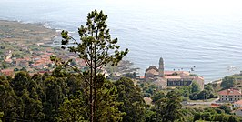

MUNICIPIO DE OIA
Oia es un municipio ubicado en el litoral meridional de la provincia de Pontevedra. Forma parte de la comarca del Bajo Miño. Tiene una población de 3.018 habitantes (según los datos del INE) del año 2018.
Sitios para vistar en Oia
- Monasteiro
- Ruta maxica de oia
- Pozas de mougas
- Talaso
Restaurantes en Oia
- Mesón Messi
- Restaurante Miau
- Kebab Khälib
🌯 🌯 🌯 🌯 🌯 🌯 🌯 🌯

Curriculum Lucas